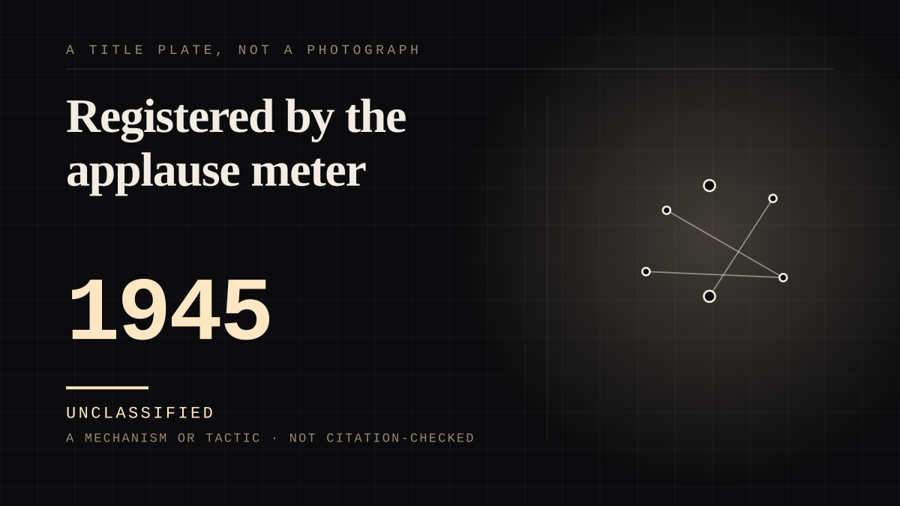

A mechanism or tactic · 1945 · Fandom
Registered by the applause meter
A woman's misfortune told aloud, a crowd's reaction converted into a number, and the number chose her.

**A machine returned the verdict on somebody's life.** The format that actually broadcast is not the one most people remember. The host interviewed four or five women one at a time, each telling her personal troubles - a terminally sick child at home, a disabled husband out of work, the need for a hearing aid, a washing machine, a refrigerator - and then **the audience chose the winner by applauding**. The source is exact about the instrument: she "who received the greatest amount of applause **as registered by the 'applause meter'** was Queen for a Day." So a woman's hardship was narrated aloud, a room's reaction was converted into a reading, and the reading decided. **Every other `cog` case in this corpus argues the point structurally; this one has a box on a wall with a needle in it.** The register asks whether seeing the whole machine changes the attachment - and here the machine is not a metaphor for a set of relations, it is the thing that did the choosing. **And the instrument was pointed at the wrong room, which is the honesty note that makes it sharper rather than weaker.** In radio the home listener could not participate at all. The crowd the meter registered was the **studio** audience - as the format has it, the audience was asked "Would you like to be Queen for a Day?", "YES!!!!" shouted the audience, and "the audience cheered to pick their favorite one" - while the millions listening at home could not applaud into the device. **So the applause meter was not a proxy for the audience's feeling. It measured a different and much smaller audience than the one listening.** The far end was not merely unseen; its measuring instrument was aimed elsewhere. That is a sharper claim than "the audience picked the winner", and it is the one the sources support. **The prize was a fictional figure assembled out of a real woman's misfortune.** The prize list is a Cinderella transformation in full: "It starred their friends and neighbors, and **turned them into fabulous Cinderellas** with such prizes as a charming five-star luncheon with a friend, a roll down the red carpet at a movie studio, a beauty analysis, Hollywood makeup and hairdo, escort through the Boulevard, dining on the finest steaks and tropical fruits, then dancing at the finest star-studded clubs." **The object of the public's attachment is a Queen, and she is built weekly out of a neighbour's hardship** - one contestant asked for "an operation for her sick cat". So the parasocial figure is manufactured from real grief, and the grief is then explained as a commercial. Jack Bailey's sign-off is the thesis of the format in eight words: **"Make every woman a queen, for every single day!"** **And the throne was where the performance was compulsory.** Documented as mood dissonance: after being crowned, the contestant "was expected to sit on a throne and listen to a five minute in-show commercial about all the consumer items that she'd just won, **while pretending to be really excited and thankful about the benefits of things like aluminum cookware and dog treats**." **A woman who has just asked in public for surgery for her child is then required to perform gratitude to a sponsor, on air, for five minutes.** That is `simulated` reciprocity aimed at the person being pitied rather than at the audience, and it is the most uncomfortable mechanism in this corpus - because the performance is compulsory and the person performing it has the least power in the room to refuse it. The audience's attachment is real; the contestant's half of it is a sponsorship read. **The sorrow slot was sold by the minute.** Sponsored by Malted Milk, and the network's own arithmetic is the record: the show was so popular that the network extended it from 30 to 45 minutes "so they could sell more commercial time at the then astounding rate of **$4000 per minute**". So the position of the contestant with the worst story was worth money to somebody, and the schedule is the receipt. **The shape of the thing, briefly, because it is genuinely a forerunner and the corpus should say so on its own terms.** Created by John Masterson, debuting on the Mutual network on **30 April 1945** as *Queen for Today*, hosted first by Ken Murray; a few months in it moved to Los Angeles, took the name *Queen for a Day*, and Jack Bailey - a former vaudeville musician and World's Fair barker - took over, simulcasting on television from 1948 through a DuMont affiliate whose owner also owned Mutual's Los Angeles radio station. Radio ran to 1957; it went to NBC television in 1956 and ABC in 1960. **The transition that made the device possible is in its own dates**: the applause meter needs a room, and the room arrived on schedule alongside the contest. **Two honesty notes on this entry's own sourcing**, because the weakest records are also the most load-bearing. The applause-meter wording - the entry's title and its central claim - comes from Simple English Wikipedia, which is a wiki and should be stood behind. The throne behaviour and the mood-dissonance description come from TV Tropes, which is user-edited and is the weakest source here. The $4000-per-minute figure comes from a fan site and is **not** corroborated anywhere in what was read, so it is the first thing to check. The publication and format facts - creator, host, dates, networks, prizes, running time - are corroborated across the Television Academy's own archive and two independent catalogues, and those can be relied on.
Where it sits
1900 1900-1949 · 1945 1949
Provenance · 5 source record(s)
- retrievableThe format and the instrument, which is the entry's title and its central claim. That host Jack Bailey "interviewed four women contestants" and that "Each told of her personal troubles. These troubles might involve a terminally sick child at home, a husband disabled and out of work, or the need for a hearing aid or a new washing machine"; that **"The audience chose the winner by applauding their favorite. She who received the greatest amount of applause as registered by the 'applause meter' was Queen for a Day"**; that the winner "was crowned, escorted by attendants to a throne, and given not only what she wanted, but juicy prizes like high-end appliances, upscale fashions, and exotic vacation trips as well"; that the show launched on radio on 30 April 1945 and ran there until 1957, then NBC television 1956 to 1964; that "The program is something of an early 'reality show'"; and that "the show was so popular that NBC increased its running time from 30 minutes to 45 minutes." **A wiki, and the load-bearing claim for the title - the first thing to stand behind.**Simple English Wikipedia, "Queen for a Day" ↗
- retrievableCreator, hosts and the request structure, from an institutional archive rather than a fan page. That the show was "Created by John Masterson"; that Ken Murray presented the 1945-1957 radio version and Jack Bailey 1956-1964 on television; that it "helped to usher in American listeners' and viewers' fascination with big-prize giveaway shows when it was born on radio (1945-1957), before moving to television (1956-1964)" and is "considered a forerunner of modern-day 'reality television'"; that "The show opened with host Bailey asking the audience - mostly women - 'Would YOU like to be Queen for a day?'"; that "The interview would climbax with Bailey asking the contestant what she needed most and why she wanted to win the title of Queen for a Day. Often the request was for medical care or therapeutic equipment to help a chronically ill child, but sometimes it was as simple as the need for a hearing aid, a new washing machine, or a refrigerator"; and Bailey's sign-off, **"Make every woman a queen, for every single day!"** Running time "30 min, later 45."Television Academy Interviews, "Queen for a Day" ↗
- retrievableThe audience's own voice and the sponsor, plus the Cinderella framing and one named request. That "'Would you like to be Queen for a Day?' asked the host, Jack Bailey. 'YES!!!!' shouted the audience."; that the show was **"Sponsored by Malted Milk"** and "was a popular one among housewives"; that "It starred their friends and neighbors, and **turned them into fabulous Cinderellas** with such prizes as a charming five-star luncheon with a friend, a roll down the red carpet at a movie studio, a beauty analysis, Hollywood makeup and hairdo, escort through the Boulevard, dining on the finest steaks and tropical fruits, then dancing at the finest star-studded clubs"; that "After the host interviewed the five contestants, who made requests for items of their eye (one asked for an operation for her sick cat), **the audience cheered to pick their favorite one. The winner won the item she requested**, as well as some dreamy prizes and her time in the sun as 'Queen for a Day'"; and the genre description "Contest and Audience Participation Show (1945-1957)".OTRCAT (Old Time Radio Catalog), "Queen for a Day" ↗
- retrievableThe debut details and the throne behaviour - and **this is the weakest record in the entry, user-edited, so it is flagged rather than leaned on.** That the show debuted "on the radio on April 30, 1945 as *Queen for Today* on the Mutual Broadcasting System with Ken Murray as host and with John Masterson producing the show"; that "A few months into the run, the show moved to Los Angeles and was given the more familiar title; Murray was replaced by Jack Bailey"; that from 1948 it was simulcast on television through DuMont affiliate KTSL-TV, "whose owner, the Don Lee Network, also owned KHJ-AM, Mutual's Los Angeles affiliate"; and the mood dissonance note: **"After being crowned Queen for a Day, the contestant was expected to sit on a throne and listen to a five minute in-show commercial about all the consumer items that she'd just won, while pretending to be really excited and thankful about the benefits of things like aluminum cookware and dog treats."**TV Tropes, "QueenForADay" ↗
- retrievableThe commercial arithmetic, and the single least corroborated number in the entry - recorded as such. That "Queen For A Day literally invented reality television and product integration"; and that the show "was so popular the Network actually increased its running time from 30 minutes to 45 minutes so they could sell more commercial time at the then astounding rate of **$4000 per minute**". A fan site, and **the $4000 figure is not corroborated by any other record read here**, so it is flagged on the entry as the first claim to check. The 30-to-45-minute extension itself *is* independently supported by Simple English Wikipedia and by the Television Academy.Queen for a Day Classic, queenforaday.com ↗
Not yet stood behind. The entry is real. A person has not read the citation and confirmed it, so treat the date as approximate until they do.
Connected · 2 out, 0 in
It sits in
The full timeline → · The database → · See it in the atlas →